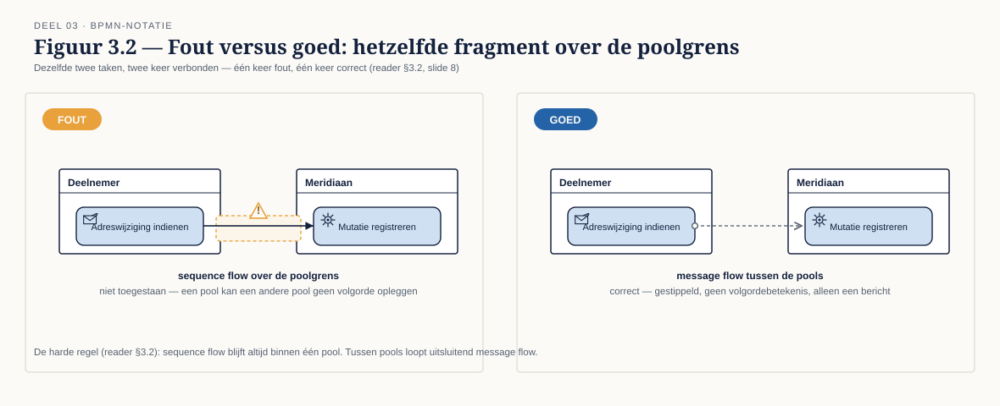
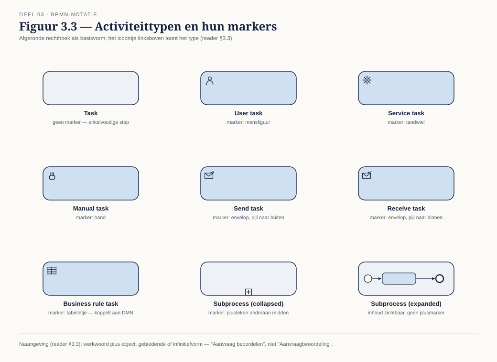
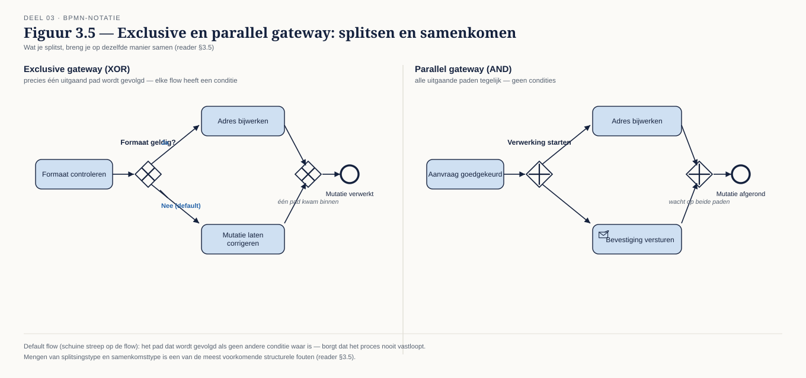
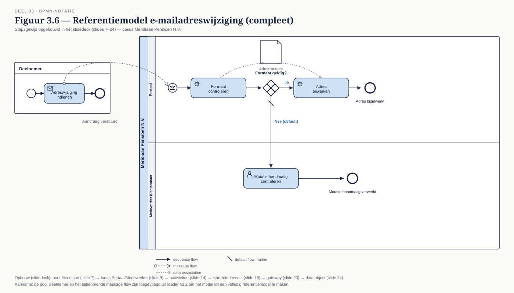

Deel 3 — BPMN basis I: de descriptive subclass
Slidedeck · Ductus-cursus BPMN, CMMN & DMN · niveau 1 · deel 3 van 30 · 28 slides
Slide 1 — Titelslide
BPMN basis I: de descriptive subclass — Deel 3
Beeldmerk, cursustitel
Spreeknotitie: Vandaag ga je voor het eerst zelf tekenen.
Slide 2 — Leerdoelen
Na vandaag kun je…
Vijf leerdoelen uit de reader
Spreeknotitie: Kort.
Slide 3 — Eerst: de omgeving
Conductus — inloggen, opslaan, exporteren
Schermafbeelding van de lege canvas
Spreeknotitie: 20 minuten begeleid. Loop rond, help individueel.
Slide 4 — Waarom één taal
Business tekent, IT bouwt — hetzelfde diagram, dezelfde betekenis
Twee figuren (business, IT) kijkend naar hetzelfde diagram
Spreeknotitie: Historie kort: BPMN 2.0.2, OMG-standaard.
Slide 5 — Twee subclasses
Descriptive eerst, analytic in deel 4
Twee concentrische verzamelingen (terugverwijzing naar deel 1, figuur 1.19-equivalent)
Spreeknotitie: Vandaag: de kern die je in vrijwel elk model nodig hebt.
Slide 6 — Pools en lanes
Wie is erbij betrokken?
Lege pool, wordt zo gevuld
Spreeknotitie: Pool = deelnemer, lane = rol binnen die deelnemer.
Slide 7 — Start: één pool
Meridiaan als pool
Opbouwmodel — stap 1: één lege pool "Meridiaan"
Spreeknotitie: We bouwen dit samen op, element voor element.
Slide 8 — De harde regel
Sequence flow blijft binnen de pool

Figuur 3.2 — fout (lijn over poolgrens) versus goed (message flow)
Spreeknotitie: Dit is de fout die vrijwel iedereen één keer maakt. Onthoud dit beeld.
Slide 9 — Lanes toevoegen
Portaal en medewerker als lanes
Opbouwmodel — stap 2: twee lanes binnen Meridiaan
Spreeknotitie: Beide horen bij Meridiaan, delen hetzelfde perspectief.
Slide 10 — Opdracht 1
Herken twintig elementen — vijf valstrikken
Werkboekverwijzing, timer 15 minuten
Spreeknotitie: Snel plenair nabespreken, focus op de vijf valstrikken.
Slide 11 — Drie vormen van activiteit
Task · subprocess · call activity

Figuur 3.3, deel 1 (de drie hoofdvormen)
Spreeknotitie: Call activity: verwijzing naar herbruikbare logica, geen eigen definitie.
Slide 12 — Tasktypen
User · service · manual · send/receive · business rule
Figuur 3.3, deel 2 (de vijf tasktypen met markers)
Spreeknotitie: Business rule task is het koppelpunt naar DMN — komt terug in deel 8.
Slide 13 — Naamgeving van activiteiten
Werkwoord plus object
Fout/goed: "Aanvraagbeoordeling" versus "Aanvraag beoordelen"
Spreeknotitie: Een activiteit is een handeling, geen toestand.
Slide 14 — Opbouwmodel: activiteiten
De eerste taken in het model
Opbouwmodel — stap 3: activiteiten "Adreswijziging indienen", "Formaat controleren", "Adres bijwerken"
Spreeknotitie: Nog geen events, nog geen gateways.
Slide 15 — Drie posities
Start · intermediate · end
 Figuur 3.4, rijen zonder kolommen ingevuld
Figuur 3.4, rijen zonder kolommen ingevuld
Spreeknotitie: Kort de drie posities uitleggen.
Slide 16 — None, message, timer
Drie eventtypen in dit deel
Figuur 3.4, volledig ingevuld
Spreeknotitie: Catching versus throwing kort benoemen.
Slide 17 — Twee regels
Eén startevent · expliciete eindtoestanden
Fout/goed: twee startevents zonder duidelijke reden versus één
Spreeknotitie: Naamgeving: voltooide vorm. "Aanvraag ontvangen", niet "Aanvraag ontvangst".
Slide 18 — Opbouwmodel: events
Start- en eindevents toegevoegd
Opbouwmodel — stap 4: start event "Adreswijziging ontvangen", end event "Adres bijgewerkt"
Spreeknotitie: Het model begint er nu als een proces uit te zien.
Slide 19 — Opdracht 2
Acht fragmenten — fout of goed?
Werkboekverwijzing, timer 30 minuten
Spreeknotitie: Individueel, dan per fragment klassikaal bespreken. Fragment 3 krijgt extra tijd.
Slide 20 — Exclusive en parallel
Precies één pad — of alle paden tegelijk

Figuur 3.5, beide gatewaytypes met split en join
Spreeknotitie: Wat je splitst, breng je op dezelfde manier samen.
Slide 21 — Condities en default flow
Elke uitgaande flow heeft een voorwaarde — of is de default
Exclusive gateway met drie paden, één als default gemarkeerd
Spreeknotitie: Default flow: borgt dat het proces nooit vastloopt.
Slide 22 — Een gateway is geen beslissing
Routeren, niet beoordelen
Fout/goed: gateway met label "Beoordelen" versus business rule task + gateway met conditie
Spreeknotitie: Rechtstreekse link naar deel 1, §1.2 — regel en volgorde gescheiden.
Slide 23 — Opbouwmodel: gateway
Formaat geldig? — de eerste routering
Opbouwmodel — stap 5: exclusive gateway na "Formaat controleren", twee paden
Spreeknotitie: Het model is nu compleet als referentie voor opdracht 3.
Slide 24 — Data, kort
Data object · data store · annotatie · group

Figuur 3.6-fragment met een data object tussen twee activiteiten
Spreeknotitie: Spaarzaam gebruiken — niet elk veld tonen.
Slide 25 — Van tekst naar model
Vijf stappen
§3.7 als genummerde lijst
Spreeknotitie: Happy path eerst, uitzonderingen daarna — dezelfde volgorde als deel 1.
Slide 26 — Opdracht 3 en 4
Modelleer e-mailadreswijziging — eerst één pool, dan twee
Werkboekverwijzing, timer 20 minuten
Spreeknotitie: Individueel in Conductus.
Slide 27 — Opdracht 5
Modelleer een fragment van WI-114 — drie pools, een timer
Werkboekverwijzing, timer 25 minuten
Spreeknotitie: Herinner aan de impliciete keuze die de tekst openlaat — dat is bewust.
Slide 28 — Opdracht 6 en 7, vooruitblik
Review met de checklist — en dan verder naar deel 4
De tien checklistpunten, en een vooruitblik: boundary events, foutafhandeling
Spreeknotitie: Bewaar je model van opdracht 5 — dat breid je in deel 4 uit.